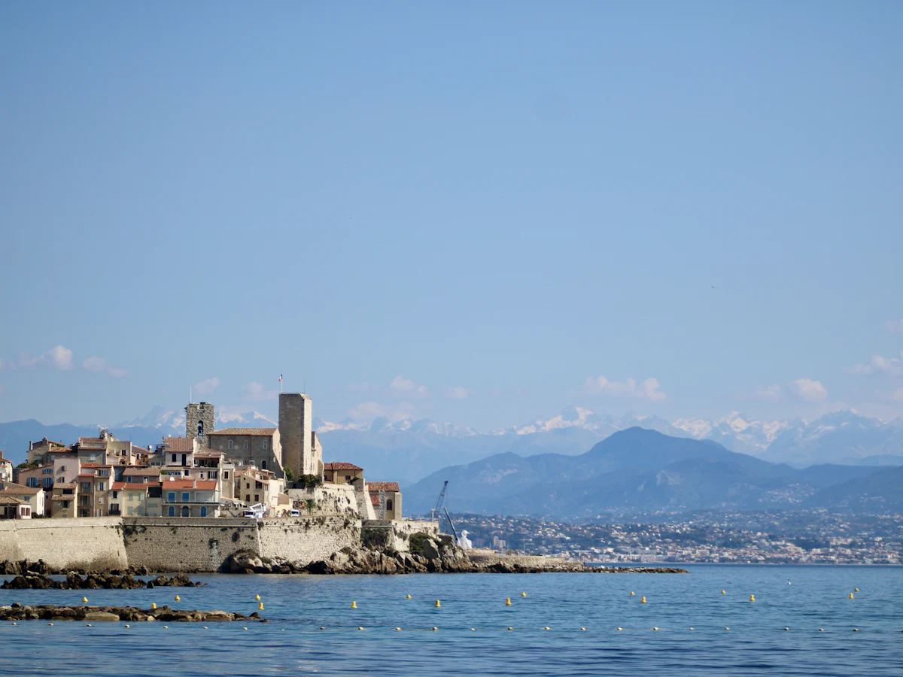
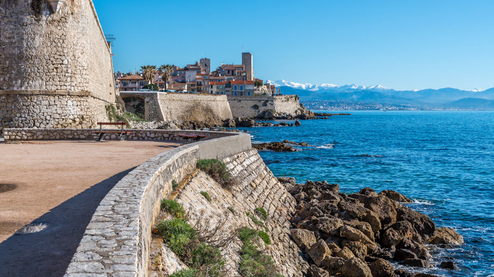
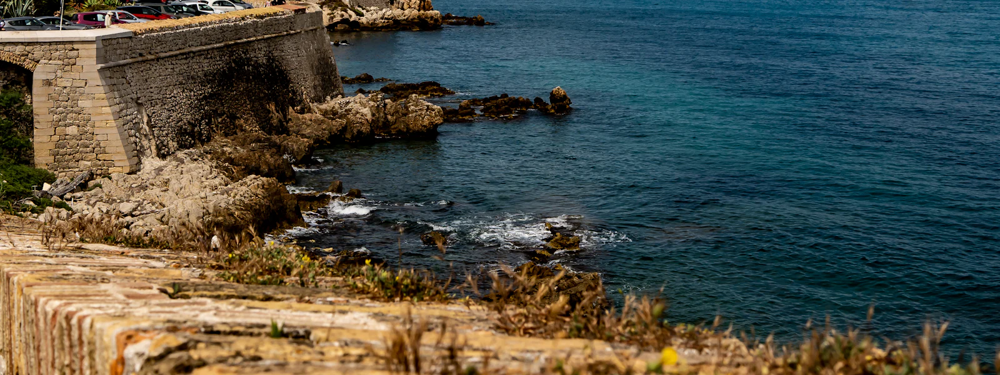

Dépannage informatique à Antibes et Sophia Antipolis
Entre le Vieil Antibes, Juan-les-Pins et la technopole de Sophia Antipolis, nous aidons les habitants et les entreprises du secteur à garder une informatique fiable, sécurisée et à jour.

Support informatique pour les start-ups et PME de Sophia Antipolis
Les jeunes entreprises de la technopole grandissent vite. Recruter un administrateur système à temps plein n'est pas toujours justifié : nous prenons ce rôle, avec la flexibilité dont vous avez besoin.
- Arrivée et départ des collaborateurs : comptes, postes, accès
- Gestion du parc PC / Mac et des licences logicielles
- Microsoft 365 ou Google Workspace, MFA et politiques de sécurité
- Préparation aux exigences de sécurité de vos clients et investisseurs

Particuliers à Antibes et Juan-les-Pins
Dépannage d'ordinateur, installation de box et de Wi-Fi, récupération de photos, aide à l'utilisation de la tablette : nous venons chez vous à Antibes, Juan-les-Pins, au Cap d'Antibes, à Biot ou à Villeneuve-Loubet.
Pour les problèmes logiciels, la télé-assistance permet souvent de résoudre le souci en moins d'une heure, sans déplacement.
Assistance aux particuliersSecteurs desservis

- Vieil Antibes
- Juan-les-Pins
- Cap d'Antibes
- La Fontonne
- Sophia Antipolis
- Biot
- Valbonne
- Villeneuve-Loubet
- Vallauris
- Mougins
Vos questions
Proposez-vous des contrats flexibles pour une start-up en croissance ?
Oui, nos contrats sont facturés au poste et s'ajustent chaque mois à votre effectif. Vous ne payez que ce que vous utilisez.
Pouvez-vous intervenir sur un parc mixte Windows et Mac ?
Oui, nous gérons les environnements Windows, macOS et Linux, ainsi que les smartphones professionnels (iOS et Android).

Un informaticien à Antibes ou Sophia Antipolis ?
Diagnostic gratuit, intervention rapide à distance ou sur place.